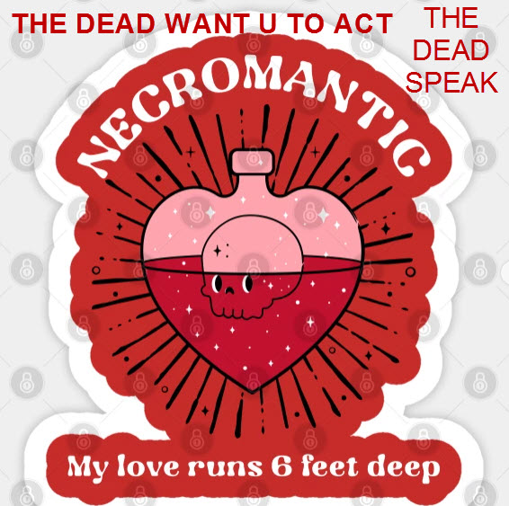

Hello Friend,
Welcome to the world of the Necroscope. Here you will find artifacts and writings I have created throughout my life.
ArtifactsEveryone I have ever lost are still rays of sunshine in my life. My Necroscope identity is not about endings it is about moving forward as fast possible as the world is not slowing down. It is about shining a light as bright as possible and as loving as possible for a long as possible.
Why I am the Necroscope and why do I code open source medical software?
I had a dream where I spoke with a group of dead people.
They told me:
1. We could have lived longer with better medicine and more advanced medical devices
2. We could of lived longer if there was more empathy and kindness in the world.
3. We needed more organizations that are focused on moving the world forward with cures and collaboration
5. They told me you are alive you can act, what are you waiting for?
The Necroscope was born.....
